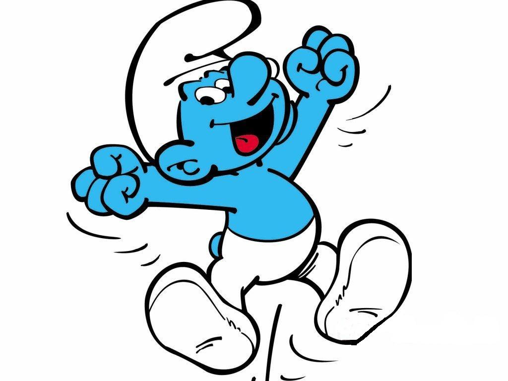

Retour à
l'index
L'art
Flamand
Rubens
et Bruegel sont
parmi
les peintres les plus importants de cette période.
Rubens
(Siegen 1577 - Anvers 1640): peintre
flamand - caractérisé par son style baroque,
exprime le rapport
entre la raison et le sentiment.
Pieter
Bruegel (env. 1525 - 1569): peintre flamand de la
première moitié du XVIe siècle. Il
exprime dans ses paysages les Alpes tout en reproduisant
des scènes de vie quotidienne typiquement belges.
L'art
Contemporain
L'art
contemporain comprend toute forme d'art créée
à partir des années '60 jusqu'à nos jours.
Parmi
les plus importants peintres, René Magritte (Lessines
1898 - Bruxelles 1967)
représente
l'exemple le plus significatif du cubisme et du futurisme.
Ses
oeuvres ont comme thème la représentation de la
réalité située dans un contexte insolite
créant ainsi un sentiment d'inquiétude.
L'art
Nouveau
C'est
un mouvement artistique diffusé en Europe et aux
États-Unis entre 1880 et 1910.
Les
oeuvres des architectes, Victor Horta et Henry van de Velde, sont
les plus représentatives de l'Art Nouveau en Belgique.
Les
artistes on decoré les façades des maisons avec des
escaliers, des balcons et des grilles avec d' élégantes
circonvolutions en fer
forgé.
La
Bande Dessinée
Depuis
la dernière décennie, la bande dessinée n'a
pas beaucoup evolué et elle subit aujourd'hui la concurrence
des bandes dessinées plus modernes.
Hergé
a participé à la naissance des plus
belles bandes dessinées à travers le supplément du
quotidien le "Petit
Vingtième". En 1929, deux
personnages qui ne seront jamais oubliés naissent de la
plume de cet artiste belge: Tintin
et son chien Milou. En 1930, il crée un autre duo
: Quick et Flupke, deux jeunes farceurs.